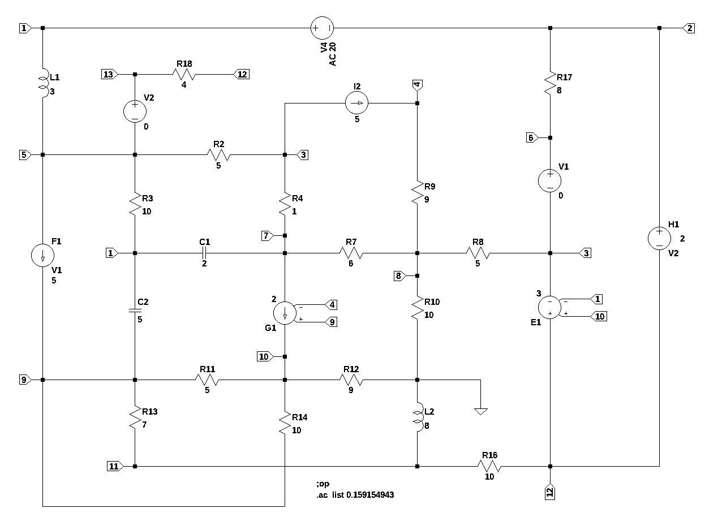
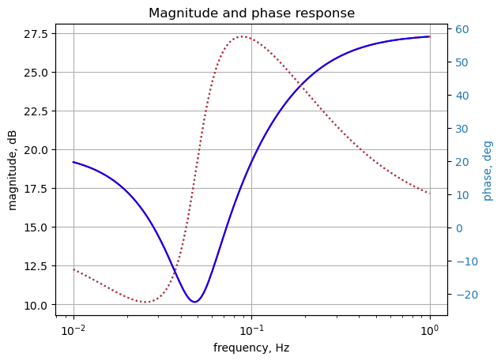
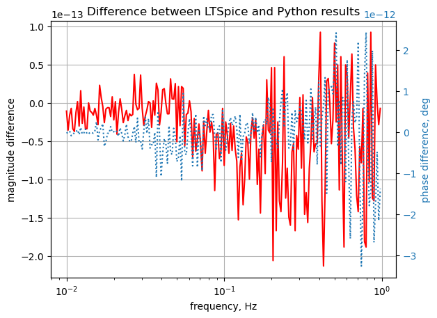

#import os
from sympy import *
import numpy as np
from tabulate import tabulate
from scipy import signal
import matplotlib.pyplot as plt
import pandas as pd
import SymMNA
from IPython.display import display, Markdown, Math, Latex
init_printing()9 Test 5
This test circuit is simular to test 4, but with the addition of inductors and capacitors. This circuit has 26 branches, 13 nodes, 18 passive components, including 2 inductors, 2 capacitors, 4 independednt sources and 4 dependent sources. V1 and V2 are zero volt sources used to measure current through their branches. V4 is the independent voltage source and is set to 20 volts DC when calculating the DC operating point and to 20 volts AC for the AC analysis.

V4 1 2 AC 20
I2 3 4 5
F1 5 9 V1 5
E1 12 3 10 1 3
G1 7 10 9 4 2
H1 2 12 V2 2
R3 5 1 10
R4 3 7 1
R9 4 8 9
R10 8 0 10
R13 9 11 7
R14 10 9 10
R2 3 5 5
R7 8 7 6
R11 10 9 5
R12 0 10 9
R16 12 11 10
R8 3 8 5
R17 2 6 8
V1 6 3 0
V2 13 5 0
R18 12 13 4
C1 7 1 2
C2 1 9 5
L1 1 5 3 Rser=0
L2 0 11 8 Rser=09.1 Load the net list
net_list = '''
V4 1 2 20
I2 3 4 5
F1 5 9 V1 5
E1 12 3 10 1 3
G1 7 10 9 4 2
H1 2 12 V2 2
R3 5 1 10
R4 3 7 1
R9 4 8 9
R10 8 0 10
R13 9 11 7
R14 10 9 10
R2 3 5 5
R7 8 7 6
R11 10 9 5
R12 0 10 9
R16 12 11 10
R8 3 8 5
R17 2 6 8
V1 6 3 0
V2 13 5 0
R18 12 13 4
C1 7 1 2
C2 1 9 5
L1 1 5 3
L2 0 11 8
'''9.2 Call the symbolic modified nodal analysis function
report, network_df, i_unk_df, A, X, Z = SymMNA.smna(net_list)Display the equations
# reform X and Z into Matrix type for printing
Xp = Matrix(X)
Zp = Matrix(Z)
temp = ''
for i in range(len(X)):
temp += '${:s}$<br>'.format(latex(Eq((A*Xp)[i:i+1][0],Zp[i])))
Markdown(temp)\(- C_{1} s v_{7} - C_{2} s v_{9} + I_{L1} + I_{V4} + v_{1} \left(C_{1} s + C_{2} s + \frac{1}{R_{3}}\right) - \frac{v_{5}}{R_{3}} = 0\)
\(I_{H1} - I_{V4} + \frac{v_{2}}{R_{17}} - \frac{v_{6}}{R_{17}} = 0\)
\(- I_{Ea1} - I_{V1} + v_{3} \cdot \left(\frac{1}{R_{8}} + \frac{1}{R_{4}} + \frac{1}{R_{2}}\right) - \frac{v_{8}}{R_{8}} - \frac{v_{7}}{R_{4}} - \frac{v_{5}}{R_{2}} = - I_{2}\)
\(\frac{v_{4}}{R_{9}} - \frac{v_{8}}{R_{9}} = I_{2}\)
\(I_{F1} - I_{L1} - I_{V2} + v_{5} \cdot \left(\frac{1}{R_{3}} + \frac{1}{R_{2}}\right) - \frac{v_{1}}{R_{3}} - \frac{v_{3}}{R_{2}} = 0\)
\(I_{V1} - \frac{v_{2}}{R_{17}} + \frac{v_{6}}{R_{17}} = 0\)
\(- C_{1} s v_{1} - g_{1} v_{4} + g_{1} v_{9} + v_{7} \left(C_{1} s + \frac{1}{R_{7}} + \frac{1}{R_{4}}\right) - \frac{v_{8}}{R_{7}} - \frac{v_{3}}{R_{4}} = 0\)
\(v_{8} \cdot \left(\frac{1}{R_{9}} + \frac{1}{R_{8}} + \frac{1}{R_{7}} + \frac{1}{R_{10}}\right) - \frac{v_{4}}{R_{9}} - \frac{v_{3}}{R_{8}} - \frac{v_{7}}{R_{7}} = 0\)
\(- C_{2} s v_{1} - I_{F1} + v_{10} \left(- \frac{1}{R_{14}} - \frac{1}{R_{11}}\right) + v_{9} \left(C_{2} s + \frac{1}{R_{14}} + \frac{1}{R_{13}} + \frac{1}{R_{11}}\right) - \frac{v_{11}}{R_{13}} = 0\)
\(g_{1} v_{4} + v_{10} \cdot \left(\frac{1}{R_{14}} + \frac{1}{R_{12}} + \frac{1}{R_{11}}\right) + v_{9} \left(- g_{1} - \frac{1}{R_{14}} - \frac{1}{R_{11}}\right) = 0\)
\(- I_{L2} + v_{11} \cdot \left(\frac{1}{R_{16}} + \frac{1}{R_{13}}\right) - \frac{v_{12}}{R_{16}} - \frac{v_{9}}{R_{13}} = 0\)
\(I_{Ea1} - I_{H1} + v_{12} \cdot \left(\frac{1}{R_{18}} + \frac{1}{R_{16}}\right) - \frac{v_{13}}{R_{18}} - \frac{v_{11}}{R_{16}} = 0\)
\(I_{V2} - \frac{v_{12}}{R_{18}} + \frac{v_{13}}{R_{18}} = 0\)
\(v_{1} - v_{2} = V_{4}\)
\(- v_{3} + v_{6} = V_{1}\)
\(v_{13} - v_{5} = V_{2}\)
\(I_{F1} - I_{V1} f_{1} = 0\)
\(ea_{1} v_{1} - ea_{1} v_{10} + v_{12} - v_{3} = 0\)
\(- I_{V2} h_{1} - v_{12} + v_{2} = 0\)
\(- I_{L1} L_{1} s + v_{1} - v_{5} = 0\)
\(- I_{L2} L_{2} s - v_{11} = 0\)
9.2.1 Netlist statistics
print(report)Net list report
number of lines in netlist: 26
number of branches: 26
number of nodes: 13
number of unknown currents: 8
number of RLC (passive components): 18
number of inductors: 2
number of independent voltage sources: 3
number of independent current sources: 1
number of Op Amps: 0
number of E - VCVS: 1
number of G - VCCS: 1
number of F - CCCS: 1
number of H - CCVS: 1
number of K - Coupled inductors: 0
9.2.2 Connectivity Matrix
A\(\displaystyle \left[\begin{array}{ccccccccccccccccccccc}C_{1} s + C_{2} s + \frac{1}{R_{3}} & 0 & 0 & 0 & - \frac{1}{R_{3}} & 0 & - C_{1} s & 0 & - C_{2} s & 0 & 0 & 0 & 0 & 1 & 0 & 0 & 0 & 0 & 0 & 1 & 0\\0 & \frac{1}{R_{17}} & 0 & 0 & 0 & - \frac{1}{R_{17}} & 0 & 0 & 0 & 0 & 0 & 0 & 0 & -1 & 0 & 0 & 0 & 0 & 1 & 0 & 0\\0 & 0 & \frac{1}{R_{8}} + \frac{1}{R_{4}} + \frac{1}{R_{2}} & 0 & - \frac{1}{R_{2}} & 0 & - \frac{1}{R_{4}} & - \frac{1}{R_{8}} & 0 & 0 & 0 & 0 & 0 & 0 & -1 & 0 & 0 & -1 & 0 & 0 & 0\\0 & 0 & 0 & \frac{1}{R_{9}} & 0 & 0 & 0 & - \frac{1}{R_{9}} & 0 & 0 & 0 & 0 & 0 & 0 & 0 & 0 & 0 & 0 & 0 & 0 & 0\\- \frac{1}{R_{3}} & 0 & - \frac{1}{R_{2}} & 0 & \frac{1}{R_{3}} + \frac{1}{R_{2}} & 0 & 0 & 0 & 0 & 0 & 0 & 0 & 0 & 0 & 0 & -1 & 1 & 0 & 0 & -1 & 0\\0 & - \frac{1}{R_{17}} & 0 & 0 & 0 & \frac{1}{R_{17}} & 0 & 0 & 0 & 0 & 0 & 0 & 0 & 0 & 1 & 0 & 0 & 0 & 0 & 0 & 0\\- C_{1} s & 0 & - \frac{1}{R_{4}} & - g_{1} & 0 & 0 & C_{1} s + \frac{1}{R_{7}} + \frac{1}{R_{4}} & - \frac{1}{R_{7}} & g_{1} & 0 & 0 & 0 & 0 & 0 & 0 & 0 & 0 & 0 & 0 & 0 & 0\\0 & 0 & - \frac{1}{R_{8}} & - \frac{1}{R_{9}} & 0 & 0 & - \frac{1}{R_{7}} & \frac{1}{R_{9}} + \frac{1}{R_{8}} + \frac{1}{R_{7}} + \frac{1}{R_{10}} & 0 & 0 & 0 & 0 & 0 & 0 & 0 & 0 & 0 & 0 & 0 & 0 & 0\\- C_{2} s & 0 & 0 & 0 & 0 & 0 & 0 & 0 & C_{2} s + \frac{1}{R_{14}} + \frac{1}{R_{13}} + \frac{1}{R_{11}} & - \frac{1}{R_{14}} - \frac{1}{R_{11}} & - \frac{1}{R_{13}} & 0 & 0 & 0 & 0 & 0 & -1 & 0 & 0 & 0 & 0\\0 & 0 & 0 & g_{1} & 0 & 0 & 0 & 0 & - g_{1} - \frac{1}{R_{14}} - \frac{1}{R_{11}} & \frac{1}{R_{14}} + \frac{1}{R_{12}} + \frac{1}{R_{11}} & 0 & 0 & 0 & 0 & 0 & 0 & 0 & 0 & 0 & 0 & 0\\0 & 0 & 0 & 0 & 0 & 0 & 0 & 0 & - \frac{1}{R_{13}} & 0 & \frac{1}{R_{16}} + \frac{1}{R_{13}} & - \frac{1}{R_{16}} & 0 & 0 & 0 & 0 & 0 & 0 & 0 & 0 & -1\\0 & 0 & 0 & 0 & 0 & 0 & 0 & 0 & 0 & 0 & - \frac{1}{R_{16}} & \frac{1}{R_{18}} + \frac{1}{R_{16}} & - \frac{1}{R_{18}} & 0 & 0 & 0 & 0 & 1 & -1 & 0 & 0\\0 & 0 & 0 & 0 & 0 & 0 & 0 & 0 & 0 & 0 & 0 & - \frac{1}{R_{18}} & \frac{1}{R_{18}} & 0 & 0 & 1 & 0 & 0 & 0 & 0 & 0\\1 & -1 & 0 & 0 & 0 & 0 & 0 & 0 & 0 & 0 & 0 & 0 & 0 & 0 & 0 & 0 & 0 & 0 & 0 & 0 & 0\\0 & 0 & -1 & 0 & 0 & 1 & 0 & 0 & 0 & 0 & 0 & 0 & 0 & 0 & 0 & 0 & 0 & 0 & 0 & 0 & 0\\0 & 0 & 0 & 0 & -1 & 0 & 0 & 0 & 0 & 0 & 0 & 0 & 1 & 0 & 0 & 0 & 0 & 0 & 0 & 0 & 0\\0 & 0 & 0 & 0 & 0 & 0 & 0 & 0 & 0 & 0 & 0 & 0 & 0 & 0 & - f_{1} & 0 & 1 & 0 & 0 & 0 & 0\\ea_{1} & 0 & -1 & 0 & 0 & 0 & 0 & 0 & 0 & - ea_{1} & 0 & 1 & 0 & 0 & 0 & 0 & 0 & 0 & 0 & 0 & 0\\0 & 1 & 0 & 0 & 0 & 0 & 0 & 0 & 0 & 0 & 0 & -1 & 0 & 0 & 0 & - h_{1} & 0 & 0 & 0 & 0 & 0\\1 & 0 & 0 & 0 & -1 & 0 & 0 & 0 & 0 & 0 & 0 & 0 & 0 & 0 & 0 & 0 & 0 & 0 & 0 & - L_{1} s & 0\\0 & 0 & 0 & 0 & 0 & 0 & 0 & 0 & 0 & 0 & -1 & 0 & 0 & 0 & 0 & 0 & 0 & 0 & 0 & 0 & - L_{2} s\end{array}\right]\)
9.2.3 Unknown voltages and currents
X\(\displaystyle \left[ v_{1}, \ v_{2}, \ v_{3}, \ v_{4}, \ v_{5}, \ v_{6}, \ v_{7}, \ v_{8}, \ v_{9}, \ v_{10}, \ v_{11}, \ v_{12}, \ v_{13}, \ I_{V4}, \ I_{V1}, \ I_{V2}, \ I_{F1}, \ I_{Ea1}, \ I_{H1}, \ I_{L1}, \ I_{L2}\right]\)
9.2.4 Known voltages and currents
Z\(\displaystyle \left[ 0, \ 0, \ - I_{2}, \ I_{2}, \ 0, \ 0, \ 0, \ 0, \ 0, \ 0, \ 0, \ 0, \ 0, \ V_{4}, \ V_{1}, \ V_{2}, \ 0, \ 0, \ 0, \ 0, \ 0\right]\)
9.2.5 Network dataframe
network_df| element | p node | n node | cp node | cn node | Vout | value | Vname | Lname1 | Lname2 | |
|---|---|---|---|---|---|---|---|---|---|---|
| 0 | V4 | 1 | 2 | NaN | NaN | NaN | 20.0 | NaN | NaN | NaN |
| 1 | V1 | 6 | 3 | NaN | NaN | NaN | 0.0 | NaN | NaN | NaN |
| 2 | V2 | 13 | 5 | NaN | NaN | NaN | 0.0 | NaN | NaN | NaN |
| 3 | I2 | 3 | 4 | NaN | NaN | NaN | 5.0 | NaN | NaN | NaN |
| 4 | F1 | 5 | 9 | NaN | NaN | NaN | 5.0 | V1 | NaN | NaN |
| 5 | Ea1 | 12 | 3 | 10 | 1 | NaN | 3.0 | NaN | NaN | NaN |
| 6 | G1 | 7 | 10 | 9 | 4 | NaN | 2.0 | NaN | NaN | NaN |
| 7 | H1 | 2 | 12 | NaN | NaN | NaN | 2.0 | V2 | NaN | NaN |
| 8 | R3 | 5 | 1 | NaN | NaN | NaN | 10.0 | NaN | NaN | NaN |
| 9 | R4 | 3 | 7 | NaN | NaN | NaN | 1.0 | NaN | NaN | NaN |
| 10 | R9 | 4 | 8 | NaN | NaN | NaN | 9.0 | NaN | NaN | NaN |
| 11 | R10 | 8 | 0 | NaN | NaN | NaN | 10.0 | NaN | NaN | NaN |
| 12 | R13 | 9 | 11 | NaN | NaN | NaN | 7.0 | NaN | NaN | NaN |
| 13 | R14 | 10 | 9 | NaN | NaN | NaN | 10.0 | NaN | NaN | NaN |
| 14 | R2 | 3 | 5 | NaN | NaN | NaN | 5.0 | NaN | NaN | NaN |
| 15 | R7 | 8 | 7 | NaN | NaN | NaN | 6.0 | NaN | NaN | NaN |
| 16 | R11 | 10 | 9 | NaN | NaN | NaN | 5.0 | NaN | NaN | NaN |
| 17 | R12 | 0 | 10 | NaN | NaN | NaN | 9.0 | NaN | NaN | NaN |
| 18 | R16 | 12 | 11 | NaN | NaN | NaN | 10.0 | NaN | NaN | NaN |
| 19 | R8 | 3 | 8 | NaN | NaN | NaN | 5.0 | NaN | NaN | NaN |
| 20 | R17 | 2 | 6 | NaN | NaN | NaN | 8.0 | NaN | NaN | NaN |
| 21 | R18 | 12 | 13 | NaN | NaN | NaN | 4.0 | NaN | NaN | NaN |
| 22 | C1 | 7 | 1 | NaN | NaN | NaN | 2.0 | NaN | NaN | NaN |
| 23 | C2 | 1 | 9 | NaN | NaN | NaN | 5.0 | NaN | NaN | NaN |
| 24 | L1 | 1 | 5 | NaN | NaN | NaN | 3.0 | NaN | NaN | NaN |
| 25 | L2 | 0 | 11 | NaN | NaN | NaN | 8.0 | NaN | NaN | NaN |
9.2.6 Unknown current dataframe
i_unk_df| element | p node | n node | |
|---|---|---|---|
| 0 | V4 | 1 | 2 |
| 1 | V1 | 6 | 3 |
| 2 | V2 | 13 | 5 |
| 3 | F1 | 5 | 9 |
| 4 | Ea1 | 12 | 3 |
| 5 | H1 | 2 | 12 |
| 6 | L1 | 1 | 5 |
| 7 | L2 | 0 | 11 |
9.2.7 Build the network equations
# Put matrices into SymPy
X = Matrix(X)
Z = Matrix(Z)
NE_sym = Eq(A*X,Z)Turn the free symbols into SymPy variables.
var(str(NE_sym.free_symbols).replace('{','').replace('}',''))\(\displaystyle \left( v_{13}, \ ea_{1}, \ I_{L2}, \ v_{6}, \ I_{V2}, \ v_{8}, \ V_{4}, \ v_{11}, \ s, \ R_{16}, \ v_{9}, \ v_{2}, \ R_{18}, \ V_{1}, \ v_{5}, \ I_{V1}, \ R_{8}, \ R_{12}, \ g_{1}, \ h_{1}, \ L_{1}, \ C_{2}, \ I_{V4}, \ I_{H1}, \ I_{F1}, \ I_{Ea1}, \ R_{3}, \ v_{1}, \ f_{1}, \ R_{17}, \ v_{12}, \ R_{11}, \ C_{1}, \ R_{7}, \ V_{2}, \ v_{7}, \ L_{2}, \ I_{2}, \ R_{13}, \ v_{3}, \ R_{9}, \ R_{14}, \ R_{2}, \ v_{10}, \ v_{4}, \ I_{L1}, \ R_{10}, \ R_{4}\right)\)
9.3 Symbolic solution
The symbolic solution was taking longer than a couple of minutes on my i3-8130U CPU @ 2.20GHz, so I interruped the kernel and commended the code.
#U_sym = solve(NE_sym,X)Display the symbolic solution
#temp = ''
#for i in U_sym.keys():
# temp += '${:s} = {:s}$<br>'.format(latex(i),latex(U_sym[i]))
#Markdown(temp)9.4 Construct a dictionary of element values
element_values = SymMNA.get_part_values(network_df)
# display the component values
for k,v in element_values.items():
print('{:s} = {:s}'.format(str(k), str(v)))V4 = 20.0
V1 = 0.0
V2 = 0.0
I2 = 5.0
f1 = 5.0
ea1 = 3.0
g1 = 2.0
h1 = 2.0
R3 = 10.0
R4 = 1.0
R9 = 9.0
R10 = 10.0
R13 = 7.0
R14 = 10.0
R2 = 5.0
R7 = 6.0
R11 = 5.0
R12 = 9.0
R16 = 10.0
R8 = 5.0
R17 = 8.0
R18 = 4.0
C1 = 2.0
C2 = 5.0
L1 = 3.0
L2 = 8.09.5 DC operating point
Both V4 and I2 are active.
NE = NE_sym.subs(element_values)
NE_dc = NE.subs({s:0})Display the equations with numeric values.
temp = ''
for i in range(shape(NE_dc.lhs)[0]):
temp += '${:s} = {:s}$<br>'.format(latex(NE_dc.rhs[i]),latex(NE_dc.lhs[i]))
Markdown(temp)\(0 = I_{L1} + I_{V4} + 0.1 v_{1} - 0.1 v_{5}\)
\(0 = I_{H1} - I_{V4} + 0.125 v_{2} - 0.125 v_{6}\)
\(-5.0 = - I_{Ea1} - I_{V1} + 1.4 v_{3} - 0.2 v_{5} - 1.0 v_{7} - 0.2 v_{8}\)
\(5.0 = 0.111111111111111 v_{4} - 0.111111111111111 v_{8}\)
\(0 = I_{F1} - I_{L1} - I_{V2} - 0.1 v_{1} - 0.2 v_{3} + 0.3 v_{5}\)
\(0 = I_{V1} - 0.125 v_{2} + 0.125 v_{6}\)
\(0 = - 1.0 v_{3} - 2.0 v_{4} + 1.16666666666667 v_{7} - 0.166666666666667 v_{8} + 2.0 v_{9}\)
\(0 = - 0.2 v_{3} - 0.111111111111111 v_{4} - 0.166666666666667 v_{7} + 0.577777777777778 v_{8}\)
\(0 = - I_{F1} - 0.3 v_{10} - 0.142857142857143 v_{11} + 0.442857142857143 v_{9}\)
\(0 = 0.411111111111111 v_{10} + 2.0 v_{4} - 2.3 v_{9}\)
\(0 = - I_{L2} + 0.242857142857143 v_{11} - 0.1 v_{12} - 0.142857142857143 v_{9}\)
\(0 = I_{Ea1} - I_{H1} - 0.1 v_{11} + 0.35 v_{12} - 0.25 v_{13}\)
\(0 = I_{V2} - 0.25 v_{12} + 0.25 v_{13}\)
\(20.0 = v_{1} - v_{2}\)
\(0 = - v_{3} + v_{6}\)
\(0 = v_{13} - v_{5}\)
\(0 = I_{F1} - 5.0 I_{V1}\)
\(0 = 3.0 v_{1} - 3.0 v_{10} + v_{12} - v_{3}\)
\(0 = - 2.0 I_{V2} - v_{12} + v_{2}\)
\(0 = v_{1} - v_{5}\)
\(0 = - v_{11}\)
Solve for voltages and currents.
U_dc = solve(NE_dc,X)Display the numerical solution
Six significant digits are displayed so that results can be compared to LTSpice.
table_header = ['unknown', 'mag']
table_row = []
for name, value in U_dc.items():
table_row.append([str(name),float(value)])
print(tabulate(table_row, headers=table_header,colalign = ('left','decimal'),tablefmt="simple",floatfmt=('5s','.6f')))unknown mag
--------- ----------
v1 -5.020059
v2 -25.020059
v3 -40.666907
v4 26.781121
v5 -5.020059
v6 -40.666907
v7 -32.212572
v8 -18.218879
v9 23.720095
v10 2.417779
v11 0.000000
v12 -18.353392
v13 -5.020059
I_V4 -20.241983
I_V1 1.955856
I_V2 -3.333333
I_F1 9.779280
I_Ea1 -17.029166
I_H1 -22.197839
I_L1 20.241983
I_L2 -1.553246The node voltages and current through the sources are solved for. The Sympy generated solution matches the LTSpice results:
--- Operating Point ---
V(1): -5.02006 voltage
V(2): -25.0201 voltage
V(3): -40.6669 voltage
V(4): 26.7811 voltage
V(5): -5.02006 voltage
V(9): 23.7201 voltage
V(12): -18.3534 voltage
V(10): 2.41778 voltage
V(7): -32.2126 voltage
V(8): -18.2189 voltage
V(11): 0 voltage
V(6): -40.6669 voltage
V(13): -5.02006 voltage
I(C1): -5.4385e-11 device_current
I(C2): -1.43701e-10 device_current
I(F1): 9.77928 device_current
I(H1): -22.1978 device_current
I(L1): 20.242 device_current
I(L2): -1.55325 device_current
I(I2): 5 device_current
I(R3): -8.88178e-16 device_current
I(R4): -8.45434 device_current
I(R9): 5 device_current
I(R10): -1.82189 device_current
I(R13): 3.38859 device_current
I(R14): -2.13023 device_current
I(R2): -7.12937 device_current
I(R7): 2.33228 device_current
I(R11): -4.26046 device_current
I(R12): -0.268642 device_current
I(R16): -1.83534 device_current
I(R8): -4.48961 device_current
I(R17): 1.95586 device_current
I(R18): -3.33333 device_current
I(G1): -6.12205 device_current
I(E1): -17.0292 device_current
I(V4): -20.242 device_current
I(V1): 1.95586 device_current
I(V2): -3.33333 device_currentThe results from LTSpice agree with the SymPy results.
9.5.1 AC analysis
Solve equations for \(\omega\) equal to 1 radian per second, s = 1j.
Need to set I2 = 0
element_values[I2] = 0
NE = NE_sym.subs(element_values)
NE_w1 = NE.subs({s:1j})Display the equations with numeric values.
temp = ''
for i in range(shape(NE_w1.lhs)[0]):
temp += '${:s} = {:s}$<br>'.format(latex(NE_w1.rhs[i]),latex(NE_w1.lhs[i]))
Markdown(temp)\(0 = I_{L1} + I_{V4} + v_{1} \cdot \left(0.1 + 7.0 i\right) - 0.1 v_{5} - 2.0 i v_{7} - 5.0 i v_{9}\)
\(0 = I_{H1} - I_{V4} + 0.125 v_{2} - 0.125 v_{6}\)
\(0 = - I_{Ea1} - I_{V1} + 1.4 v_{3} - 0.2 v_{5} - 1.0 v_{7} - 0.2 v_{8}\)
\(0 = 0.111111111111111 v_{4} - 0.111111111111111 v_{8}\)
\(0 = I_{F1} - I_{L1} - I_{V2} - 0.1 v_{1} - 0.2 v_{3} + 0.3 v_{5}\)
\(0 = I_{V1} - 0.125 v_{2} + 0.125 v_{6}\)
\(0 = - 2.0 i v_{1} - 1.0 v_{3} - 2.0 v_{4} + v_{7} \cdot \left(1.16666666666667 + 2.0 i\right) - 0.166666666666667 v_{8} + 2.0 v_{9}\)
\(0 = - 0.2 v_{3} - 0.111111111111111 v_{4} - 0.166666666666667 v_{7} + 0.577777777777778 v_{8}\)
\(0 = - I_{F1} - 5.0 i v_{1} - 0.3 v_{10} - 0.142857142857143 v_{11} + v_{9} \cdot \left(0.442857142857143 + 5.0 i\right)\)
\(0 = 0.411111111111111 v_{10} + 2.0 v_{4} - 2.3 v_{9}\)
\(0 = - I_{L2} + 0.242857142857143 v_{11} - 0.1 v_{12} - 0.142857142857143 v_{9}\)
\(0 = I_{Ea1} - I_{H1} - 0.1 v_{11} + 0.35 v_{12} - 0.25 v_{13}\)
\(0 = I_{V2} - 0.25 v_{12} + 0.25 v_{13}\)
\(20.0 = v_{1} - v_{2}\)
\(0 = - v_{3} + v_{6}\)
\(0 = v_{13} - v_{5}\)
\(0 = I_{F1} - 5.0 I_{V1}\)
\(0 = 3.0 v_{1} - 3.0 v_{10} + v_{12} - v_{3}\)
\(0 = - 2.0 I_{V2} - v_{12} + v_{2}\)
\(0 = - 3.0 i I_{L1} + v_{1} - v_{5}\)
\(0 = - 8.0 i I_{L2} - v_{11}\)
Solve for voltages and currents.
U_w1 = solve(NE_w1,X)Display the numerical solution
Six significant digits are displayed so that results can be compared to LTSpice.
table_header = ['unknown', 'mag','phase, deg']
table_row = []
for name, value in U_w1.items():
table_row.append([str(name),float(abs(value)),float(arg(value)*180/np.pi)])
print(tabulate(table_row, headers=table_header,colalign = ('left','decimal','decimal'),tablefmt="simple",floatfmt=('5s','.6f','.6f')))unknown mag phase, deg
--------- --------- ------------
v1 3.599764 -52.169011
v2 18.017879 -170.920917
v3 1.855665 65.635428
v4 1.903808 8.371520
v5 14.354390 47.295045
v6 1.855665 65.635428
v7 4.531708 -16.043028
v8 1.903808 8.371520
v9 1.498280 -10.433515
v10 3.010258 -107.783771
v11 2.426237 -163.488259
v12 8.767364 169.347366
v13 14.354390 47.295045
I_V4 10.838028 -177.106564
I_V1 2.387928 -166.271733
I_V2 5.102027 -154.058091
I_F1 11.939640 -166.271733
I_Ea1 3.858821 148.425320
I_H1 8.504523 179.867890
I_L1 5.120760 150.658972
I_L2 0.303280 -73.488259 --- AC Analysis ---
frequency: 0.159155 Hz
V(1): mag: 3.59976 phase: -52.169° voltage
V(2): mag: 18.0179 phase: -170.921° voltage
V(3): mag: 1.85567 phase: 65.6354° voltage
V(4): mag: 1.90381 phase: 8.37152° voltage
V(5): mag: 14.3544 phase: 47.295° voltage
V(9): mag: 1.49828 phase: -10.4335° voltage
V(12): mag: 8.76736 phase: 169.347° voltage
V(10): mag: 3.01026 phase: -107.784° voltage
V(7): mag: 4.53171 phase: -16.043° voltage
V(8): mag: 1.90381 phase: 8.37152° voltage
V(11): mag: 2.42624 phase: -163.488° voltage
V(6): mag: 1.85567 phase: 65.6354° voltage
V(13): mag: 14.3544 phase: 47.295° voltage
I(C1): mag: 5.34483 phase: 126.532° device_current
I(C2): mag: 13.3732 phase: 15.9359° device_current
I(F1): mag: 11.9396 phase: -166.272° device_current
I(H1): mag: 8.50452 phase: 179.868° device_current
I(L1): mag: 5.12076 phase: 150.659° device_current
I(L2): mag: 0.30328 phase: -73.4883° device_current
I(I2): mag: 0 phase: 0° device_current
I(R3): mag: 1.53623 phase: 60.659° device_current
I(R4): mag: 4.64174 phase: 140.656° device_current
I(R9): mag: 0 phase: 0° device_current
I(R10): mag: 0.190381 phase: 8.37152° device_current
I(R13): mag: 0.546091 phase: 6.28131° device_current
I(R14): mag: 0.352995 phase: -132.679° device_current
I(R2): mag: 2.5213 phase: -135.36° device_current
I(R7): mag: 0.484448 phase: 148.25° device_current
I(R11): mag: 0.705989 phase: -132.679° device_current
I(R12): mag: 0.334473 phase: 72.2162° device_current
I(R16): mag: 0.670093 phase: 159.833° device_current
I(R8): mag: 0.360393 phase: 128.347° device_current
I(R17): mag: 2.38793 phase: -166.272° device_current
I(R18): mag: 5.10203 phase: -154.058° device_current
I(G1): mag: 1.36963 phase: -126.779° device_current
I(E1): mag: 3.85882 phase: 148.425° device_current
I(V4): mag: 10.838 phase: -177.107° device_current
I(V1): mag: 2.38793 phase: -166.272° device_current
I(V2): mag: 5.10203 phase: -154.058° device_current
9.5.2 AC Sweep
Looking at node 5 voltage and comparing the results with those obtained from LTSpice. The frequency sweep is from 0.01 Hz to 1 Hz.
NE = NE_sym.subs(element_values)Display the equations with numeric values.
temp = ''
for i in range(shape(NE.lhs)[0]):
temp += '${:s} = {:s}$<br>'.format(latex(NE.rhs[i]),latex(NE.lhs[i]))
Markdown(temp)\(0 = I_{L1} + I_{V4} - 2.0 s v_{7} - 5.0 s v_{9} + v_{1} \cdot \left(7.0 s + 0.1\right) - 0.1 v_{5}\)
\(0 = I_{H1} - I_{V4} + 0.125 v_{2} - 0.125 v_{6}\)
\(0 = - I_{Ea1} - I_{V1} + 1.4 v_{3} - 0.2 v_{5} - 1.0 v_{7} - 0.2 v_{8}\)
\(0 = 0.111111111111111 v_{4} - 0.111111111111111 v_{8}\)
\(0 = I_{F1} - I_{L1} - I_{V2} - 0.1 v_{1} - 0.2 v_{3} + 0.3 v_{5}\)
\(0 = I_{V1} - 0.125 v_{2} + 0.125 v_{6}\)
\(0 = - 2.0 s v_{1} - 1.0 v_{3} - 2.0 v_{4} + v_{7} \cdot \left(2.0 s + 1.16666666666667\right) - 0.166666666666667 v_{8} + 2.0 v_{9}\)
\(0 = - 0.2 v_{3} - 0.111111111111111 v_{4} - 0.166666666666667 v_{7} + 0.577777777777778 v_{8}\)
\(0 = - I_{F1} - 5.0 s v_{1} - 0.3 v_{10} - 0.142857142857143 v_{11} + v_{9} \cdot \left(5.0 s + 0.442857142857143\right)\)
\(0 = 0.411111111111111 v_{10} + 2.0 v_{4} - 2.3 v_{9}\)
\(0 = - I_{L2} + 0.242857142857143 v_{11} - 0.1 v_{12} - 0.142857142857143 v_{9}\)
\(0 = I_{Ea1} - I_{H1} - 0.1 v_{11} + 0.35 v_{12} - 0.25 v_{13}\)
\(0 = I_{V2} - 0.25 v_{12} + 0.25 v_{13}\)
\(20.0 = v_{1} - v_{2}\)
\(0 = - v_{3} + v_{6}\)
\(0 = v_{13} - v_{5}\)
\(0 = I_{F1} - 5.0 I_{V1}\)
\(0 = 3.0 v_{1} - 3.0 v_{10} + v_{12} - v_{3}\)
\(0 = - 2.0 I_{V2} - v_{12} + v_{2}\)
\(0 = - 3.0 I_{L1} s + v_{1} - v_{5}\)
\(0 = - 8.0 I_{L2} s - v_{11}\)
Solve for voltages and currents.
U_ac = solve(NE,X)9.5.3 Plot the voltage at node 5
H = U_ac[v5]num, denom = fraction(H) #returns numerator and denominator
# convert symbolic to numpy polynomial
a = np.array(Poly(num, s).all_coeffs(), dtype=float)
b = np.array(Poly(denom, s).all_coeffs(), dtype=float)
system = (a, b)#x = np.linspace(0.01*2*np.pi, 1*2*np.pi, 200, endpoint=True)
x = np.logspace(-2, 0, 200, endpoint=False)*2*np.pi
w, mag, phase = signal.bode(system, w=x) # returns: rad/s, mag in dB, phase in degLoad the csv file of node 5 voltage over the sweep range and plot along with the results obtained from SymPy.
fn = 'test_5.csv' # data from LTSpice
LTSpice_data = np.genfromtxt(fn, delimiter=',')# initaliaze some empty arrays
frequency = np.zeros(len(LTSpice_data))
voltage = np.zeros(len(LTSpice_data)).astype(complex)
# convert the csv data to complez numbers and store in the array
for i in range(len(LTSpice_data)):
frequency[i] = LTSpice_data[i][0]
voltage[i] = LTSpice_data[i][1] + LTSpice_data[i][2]*1jfig, ax1 = plt.subplots()
ax1.set_ylabel('magnitude, dB')
ax1.set_xlabel('frequency, Hz')
plt.semilogx(frequency, 20*np.log10(np.abs(voltage)),'-r') # Bode magnitude plot
plt.semilogx(w/(2*np.pi), mag,'-b') # Bode magnitude plot
ax1.tick_params(axis='y')
#ax1.set_ylim((-30,20))
plt.grid()
# instantiate a second y-axes that shares the same x-axis
ax2 = ax1.twinx()
color = 'tab:blue'
plt.semilogx(frequency, np.angle(voltage)*180/np.pi,':',color=color) # Bode phase plot
plt.semilogx(w/(2*np.pi), phase,':',color='tab:red') # Bode phase plot
ax2.set_ylabel('phase, deg',color=color)
ax2.tick_params(axis='y', labelcolor=color)
#ax2.set_ylim((-5,25))
plt.title('Magnitude and phase response')
plt.show()
fig, ax1 = plt.subplots()
ax1.set_ylabel('magnitude difference')
ax1.set_xlabel('frequency, Hz')
plt.semilogx(frequency[0:-1], np.abs(voltage[0:-1])-10**(mag/20),'-r') # Bode magnitude plot
#plt.semilogx(w/(2*np.pi), mag,'-b') # Bode magnitude plot
ax1.tick_params(axis='y')
#ax1.set_ylim((-30,20))
plt.grid()
# instantiate a second y-axes that shares the same x-axis
ax2 = ax1.twinx()
color = 'tab:blue'
plt.semilogx(frequency[0:-1], np.unwrap(2*np.angle(voltage[0:-1])/2) *180/np.pi - phase,':',color=color) # Bode phase plot
#plt.semilogx(w/(2*np.pi), phase,':',color='tab:red') # Bode phase plot
ax2.set_ylabel('phase difference, deg',color=color)
ax2.tick_params(axis='y', labelcolor=color)
#ax2.set_ylim((-5,25))
plt.title('Difference between LTSpice and Python results')
plt.show()
The SymPy and LTSpice results overlay each other. The scale for the magnitude is \(10^{-13}\) and \(10^{-12}\) for the phase indicating the numerical difference is very small.